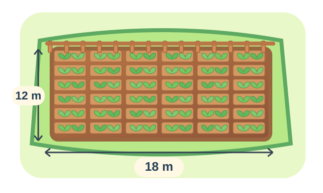

Hỏi đáp với AI
Bài toán Toán lớp 5
Một thửa vườn hình chữ nhật có chiều dài 18 m và chiều rộng 12 m. Người làm vườn muốn chia vườn thành các lô nhỏ đều nhau để trồng rau. Nếu mỗi lô có diện tích 6 m², thì vườn được chia thành bao nhiêu lô?

Lời giải từ AI
Cùng xem từng bước để hiểu bài nhé!
- 1
Bước 1: Tính diện tích khu vườn
Diện tích hình chữ nhật = chiều dài × chiều rộng.
18 × 12 = 216 m² - 2
Bước 2: Diện tích mỗi lô nhỏ
Theo đề bài, diện tích mỗi lô trồng rau là 6 m².
- 3
Bước 3: Tính số lô nhỏ
Lấy diện tích cả khu vườn chia cho diện tích một lô.
216 : 6 = 36 (lô)
🏆 Kết quả
Vườn được chia thành
36 lô📖 Đọc lại các bước để nhớ cách làm nhé!